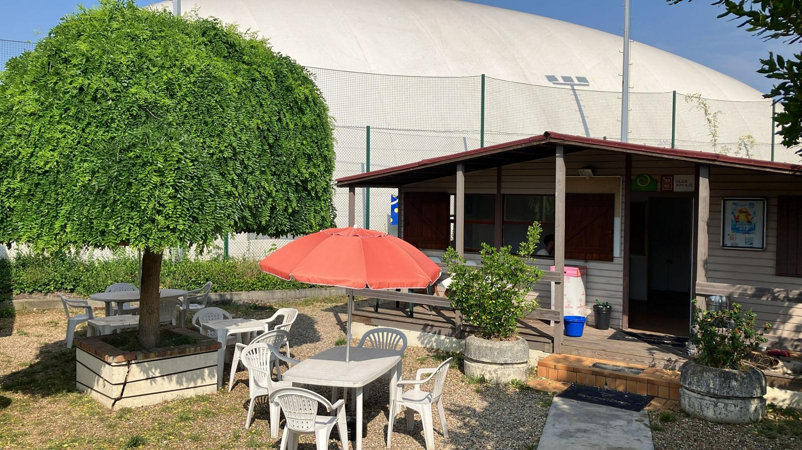

Le chalet
Le club house, point de rendez-vous des familles, joueurs et bénévoles.
Club familial et sportif depuis 1978
Un club de quartier vivant, des cours pour tous les âges et le plaisir de se retrouver autour du tennis et du pickleball.
Un club pour tous les niveaux
Le Tennis Club d'Ivry accompagne les enfants, les adultes loisirs et les joueurs compétition dans une ambiance simple, conviviale et chaleureuse.
Le club en images
À la suite des dégâts annoncés en août 2026, l’organisation des activités dépend de la disponibilité des installations. Contactez le club avant de vous déplacer pour jouer.

Le club house, point de rendez-vous des familles, joueurs et bénévoles.

La disponibilité des courts pour les cours et le jeu libre est à confirmer auprès du club.

La bulle a été arrachée. Le communiqué du 5 septembre 2026 indique qu’elle ne sera pas réinstallée.
Accès rapide
Découvrez les activités et contactez le club pour connaître les tarifs et les places disponibles.
Consultez les démarches et contactez les responsables pour connaître les places disponibles.
Découvrez les coachs, le bureau du club et l'organisation sportive.
Votre avis compte
Une idée, une difficulté ou une suggestion ? Aidez-nous à améliorer le site du club.
Faites confirmer votre place en cours de tennis avant de vous inscrire. Pickleball : complet, inscriptions fermées.